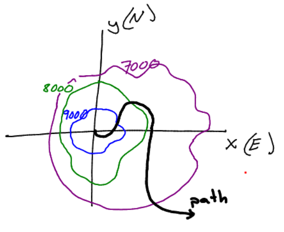
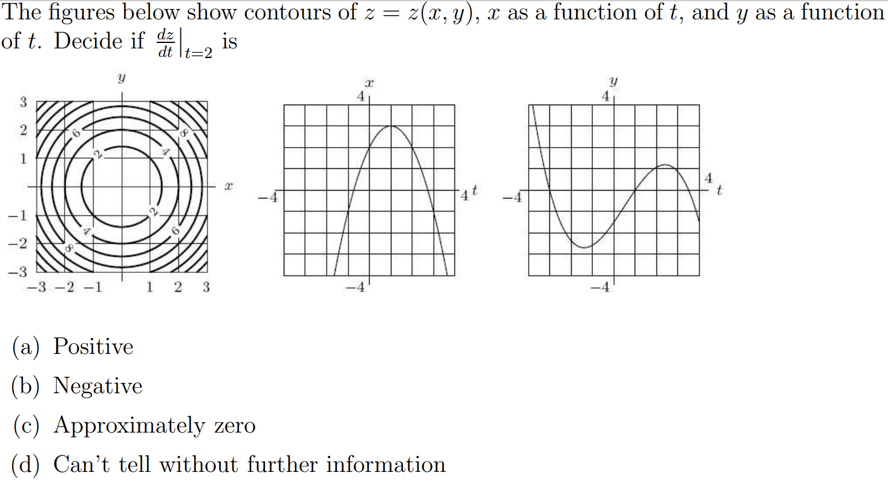
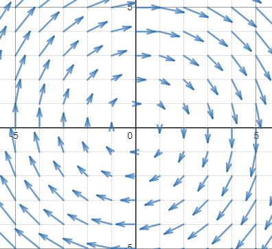

Find tangent planes for the functions below at the specified points.
\( \displaystyle z = g(x,y) = \sqrt{4-x^2 - y^2}\) at point \((1,1,\sqrt{2})\)
\( \displaystyle z = f(x,y) = 32 - 3x^2 - 4y^2\) at point (2,1,16)
Linear Approximation in 2D
Let \(\displaystyle f(x,y) = \frac{5}{x^2 + y^2}\).
What is the tangent plane at (-1,2)?
Use a linear approximation to estimate \(f(-1.05,2.1)\) using \(f(-1,2)\).
Differential Definition
Let \(z = f(x,y)\) be a function of two variables with \( (x_0,y_0) \) in the domain of \(f\). Then the total differential of \(z\) is given
$$dz = f_x(x_0,y_0) dx + f_y(x_0,y_0)dy.$$
Example - Resistors
Consider 3 resistors in parallel. The total resistance is given by
$$\frac{1}{R_{tot}} = \frac{1}{R_{1}} + \frac{1}{R_{2}} + \frac{1}{R_{3}}.$$
Let \(R_1 = 20 \Omega \pm 1 \Omega\), \(R_2 = 10 \Omega \pm 0.5 \Omega\), and \(R_1 = 2 \Omega \pm 0.2 \Omega\).
Calculate \(R_{tot}\).
Calculate the total differential \( dR_{tot}\)
Use your answer above to estimate the error in \(R_{tot}\).
Example - Platelet Volume
Platelets are small ellipsoidal nonnucleated cells which are important for blood clotting.
Assume a platelet has an ellipsoidal shape (like an M&M or a Skittle) with diameters 2, 8, and 8 microns(\(\mu m\)).
The tolerance in each of these measurements is \(\pm 100 nm\). Estimate the volume (\(\pm\) tolerance) of this platelet using ideas of differentials.
Example - Ski mountain

Consider skiing on the mountain above with \(z\) representing elevation and the black curve representing the path taken. How does elevation change with respect to time?
Consider a new simpler mountain given by \(z = e^{-x^2 -y^2}\) and ski path given by \(x(t) = 1 - e^{-t}, y(t) = -t^4 + t^2\). Find \(\frac{dz}{dt}\).
What is the slope when \(t = 2\)?
What if the path were \(x(t) = \cos t, y(t) = \sin t\)? Find \(\frac{dz}{dt}\). Interpret your solution.
Example - chain rule

Example - more chain rule
Let \(z\equiv z(x,y), x\equiv x(s,t), y \equiv y(s,t)\). We can't find \(\frac{dz}{ds}\). We need to find \(\frac{\partial z}{\partial s}\).
Come up with a formula for \(\frac{\partial z}{\partial s}\).
Example. \(\displaystyle z = e^x \sin y\) with \(x = st^2, y=s^2t\). Find \(\frac{\partial z}{\partial s}\) and \(\frac{\partial z}{\partial t}\).
Example - implicit partial derivatives
Consider \(\sin(xy) + \pi y^2 - x = 0\).
Use implicit differentiation to find \(\frac{dy}{dx}\).
Now let \(F(x,y) = \sin(xy) + \pi y^2 - x = 0\) or simply \(F(x,y) = 0\). Implicitly differentiate with respect to \(x\) and solve for \(\frac{dy}{dx}\).
Try the same thing but with \(G(x,y) = x^2 - 2y^2 - 1 = 0\) implicitly differentiate to find \(\frac{dy}{dx}\).
What if we have \(F(x,y,z) = 0\) instead? What changes?
Assume \(z\equiv z(x,y)\). Implicitly differentiate with respect to \(x\) (need partial derivatives now) and solve for \(\frac{\partial x}{\partial x}\).
Find \(\frac{\partial x}{\partial x}\) if \(z(x,y)\) is defined implicitly by \(xy + xz + yz = 3\).
Example - fluid flow

Consider the fluid flow field above. \(u\) is the fluid velocity in the \(x\) direction, and \(v\) is the fluid velocity in the \(y\) direction.
Then the flow velocity vector is \(\displaystyle \vec{u} = \begin{bmatrix}u \\ v \end{bmatrix}\). The speed of the flow is given by \(\displaystyle s = \sqrt{u^2 + v^2}\).
For the flow above we have \(u (x,y) = 2y\) and \(v = -2x\). How does the fluid speed change with respect to \(x\)? \(y\)?